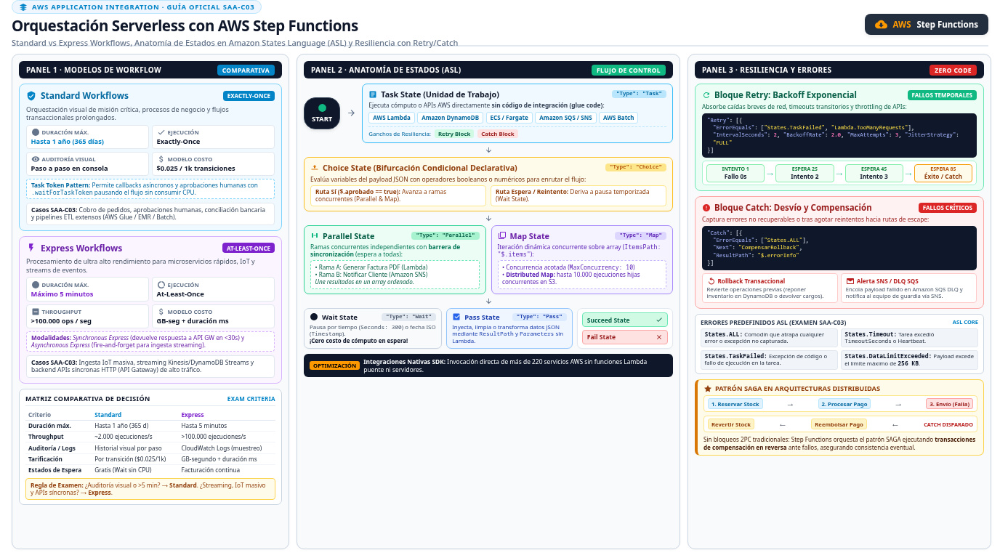

Step Functions AWS Step Functions
La orquestación visual de workflows serverless: coordina Lambdas y otros servicios con estados, reintentos y visibilidad total de cada ejecución.
Imagina un director de orquesta que no toca ningún instrumento pero indica a cada músico cuándo entrar, qué hacer si alguien se equivoca y cuándo terminar la pieza. AWS Step Functions es ese director para tus componentes serverless: define un workflow (una máquina de estados) como código JSON — el Amazon States Language que la documentación oficial enlaza como especificación — y el servicio lo ejecuta, lo dibuja en la consola y registra el estado exacto de cada paso. Las funciones Lambda y las llamadas a otros servicios de AWS son los músicos; Step Functions es la partitura ejecutable.
El problema que resuelve es el que aparece en mitad de todo proyecto con Lambda: encadenar funciones una tras otra acaba en código de orquestación frágil — una Lambda que llama a otra, reintentos escritos a mano, timeouts mal repartidos y cero visibilidad de por dónde se quedó el flujo. Step Functions externaliza esa lógica: la secuencia, las ramas, los retries y la compensación de errores viven en la definición del workflow, no en tu código. Para el examen, es la respuesta cuando aparecen las palabras orchestrate, multi-step workflow, retry with backoff o visual workflow junto a Lambda.

Los estados que debes reconocer al vuelo
Un workflow es una lista de states conectados; cada uno tiene un tipo y una tarea concreta en la lógica del flujo. La pregunta del examen suele dar un escenario ("after the payment succeeds, send an email; if it fails, wait and retry") y tú debes identificar qué estados describen esa lógica — o directamente qué servicio la implementa. La tabla siguiente cruza cada tipo de estado con el patrón de enunciado que lo delata; estúdiala hasta que la lectura sea automática.
| Estado | Qué hace | Señal en el enunciado |
|---|---|---|
| Task | Ejecuta una unidad de trabajo: una Lambda, una llamada a otro servicio de AWS, una actividad | "invoke a function", "call DynamoDB", "run a Glue job" |
| Choice | Ramifica el flujo según reglas sobre la salida del paso anterior | "if the payment succeeds… otherwise…", "route based on output" |
| Wait | Pausa el flujo un tiempo fijo o hasta una fecha | "delay", "wait 24 hours before retrying" |
| Parallel | Ejecuta varias ramas a la vez y espera a todas | "simultaneously", "at the same time", "concurrent branches" |
| Map | Recorre cada elemento de un array y ejecuta pasos por elemento | "for each item in the order", "process every record" |
| Succeed / Fail | Terminan el workflow con éxito o error explícito | "mark the workflow as failed", terminal states |
Error handling: Retry y Catch, el argumento decisivo
La gestión de errores es la razón por la que Step Functions gana contra la orquestación casera. Cada estado acepta bloques Retry y Catch. Con Retry defines, por tipo de error, cuántos reintentos y con qué estrategia de backoff — el intervalo crece entre intentos para no saturar un servicio degradado. Con Catch defines el plan B: si el error persiste, el flujo salta a un estado de recuperación (notificar, compensar la transacción, archivar el caso para revisión humana) en vez de morir con una excepción opaca. Los errores son identificables por nombre, así puedes reintentar un timeout transitorio pero abortar de inmediato un error de validación permanente.
Compara eso con escribir lo mismo a mano en Lambda: cada función necesita su propio envoltorio de reintentos, el estado del flujo se pierde entre invocaciones, y diagnosticar un fallo a las 3 AM significa leer logs encadenados. Con Step Functions, la consola muestra el grafo de la ejecución con el paso exacto que falló, su entrada, su salida y su historial de reintentos. La documentación oficial resume el objetivo citando la integración con decenas de servicios de AWS y casos de uso como procesos ETL, machine learning y automatización de IT — todos escenarios multipaso donde el error handling y la observabilidad mandan.
Standard vs Express workflows
Step Functions ofrece dos tipos de workflow, y la elección es una pregunta de examen en sí misma. Los Standard workflows son para procesos de larga duración: cada ejecución puede vivir horas, la historia de cada paso queda registrada para auditoría y el modelo de entrega es fiable paso a paso — es el tipo para órdenes de compra, pipelines de datos o aprovisionamientos. Los Express workflows optimizan el otro extremo: ejecuciones cortas de altísima tasa (piensa en eventos de IoT o streams), con menor costo por ejecución a cambio de un modelo de entrega at-least-once y una historia de ejecución más ligera. La regla mnemotécnica: larga duración y auditoría → Standard; alto volumen y corta duración → Express.
Step Functions frente a orquestar Lambdas a mano
El dilema final del examen: te dan un flujo multipaso y preguntan cómo implementarlo "with the least operational overhead" (frase favorita del SAA-C03). La respuesta depende de la complejidad de la lógica de control. Un flujo lineal de dos pasos cabe en una sola Lambda que llame a la siguiente. Pero en cuanto aparecen ramas condicionales, bucles por elemento, reintentos con backoff o ejecuciones paralelas, escribirlo a mano es mantener una máquina de estados distribuida invisible; Step Functions la hace visible, gestionada y tolerante a fallos. El costo es aprender ASL y aceptar una dependencia más; el beneficio es eliminar todo el código de plumbing.
| Criterio | Step Functions | Orquestación manual en Lambda |
|---|---|---|
| Visibilidad | Grafo de ejecución en consola, paso a paso | Reconstruir el flujo desde logs |
| Reintentos y errores | Retry con backoff y Catch por estado, declarativos | Código propio en cada función |
| Ramas y bucles | Choice, Parallel y Map nativos | Condicionales y promesas en código |
| Estados de larga duración | El workflow espera sin consumir cómputo | Lambda no debe dormir: encadenar vía colas/timers |
| Cuándo elegirlo | Flujos multipaso, con errores y ramas — mínimo overhead | Flujos triviales lineales de 1-2 pasos |
sobre Lambda"] --> B{"¿Ramas, bucles o
reintentos con backoff?"} B -->|"sí"| SF["Step Functions
máquina de estados"] B -->|"no"| L["Lambda simple
menos piezas"] SF --> V["Ganas: visibilidad
y error handling"] classDef navy fill:#EFF6FF,stroke:#3B82F6,stroke-width:2px,color:#1E293B classDef green fill:#F0FDF4,stroke:#10B981,stroke-width:2px,color:#1E293B classDef amber fill:#FFF7ED,stroke:#F59E0B,stroke-width:2px,color:#1E293B class A,SF green class B amber class L,V navy
- Step Functions = serverless workflow orchestration; el workflow se escribe en JSON con Amazon States Language.
- Estados clave: Task (trabajo), Choice (ramificar), Wait (pausa), Parallel (ramas simultáneas), Map (por elemento), Succeed/Fail (finales).
- Retry = reintentos con backoff por tipo de error; Catch = salto a estado de recuperación — error handling declarativo, sin código.
- Standard para ejecuciones largas con auditoría; Express para ejecuciones cortas de alta tasa.
- "Least operational overhead" + flujo multipaso con ramas/reintentos → Step Functions, no orquestación manual en Lambda.
- La consola muestra el grafo y el estado exacto de cada ejecución — diagnóstico sin logs cruzados.
- INT-05 AWS Step Functions — Welcome (workflows, states) · docs.aws.amazon.com/step-functions/latest/dg/welcome.html